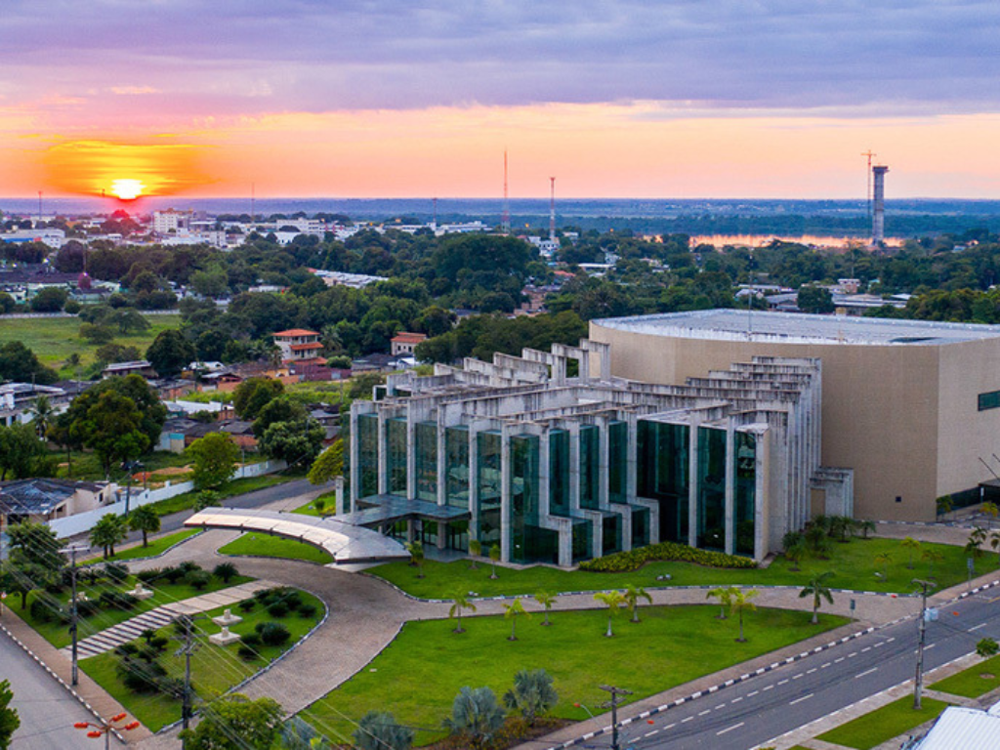

Rondônia é um estado de forte vocação agrícola e um dos motores do agronegócio na Região Norte, destacando-se como grande produtor de soja, carne bovina, café e peixes como o tambaqui. Criado em 1981 e batizado em homenagem ao Marechal Rondon, o estado possui uma população de aproximadamente 1,75 milhão de habitantes (estimativa 2025), concentrada principalmente na capital, Porto Velho, e em centros dinâmicos como Ji-Paraná e Vilhena. Sua economia é uma das que mais crescem no Brasil, impulsionada por exportações recordes e uma baixa taxa de desemprego, enquanto sua história é preservada em marcos como a Estrada de Ferro Madeira-Mamoré e o Forte Príncipe da Beira. Em 2026, o governo estadual projeta que o valor da produção agropecuária alcance R$ 30,2 bilhões, mantendo o estado como uma potência regional.
